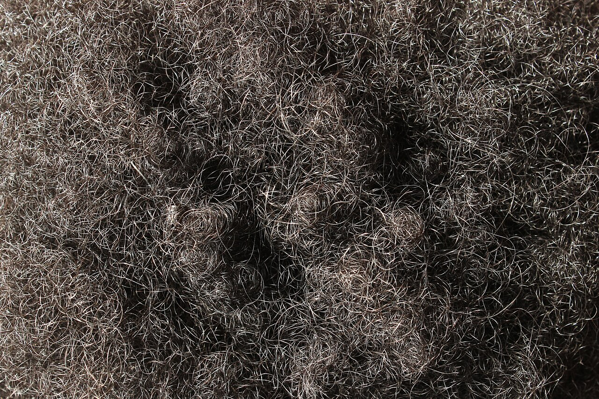
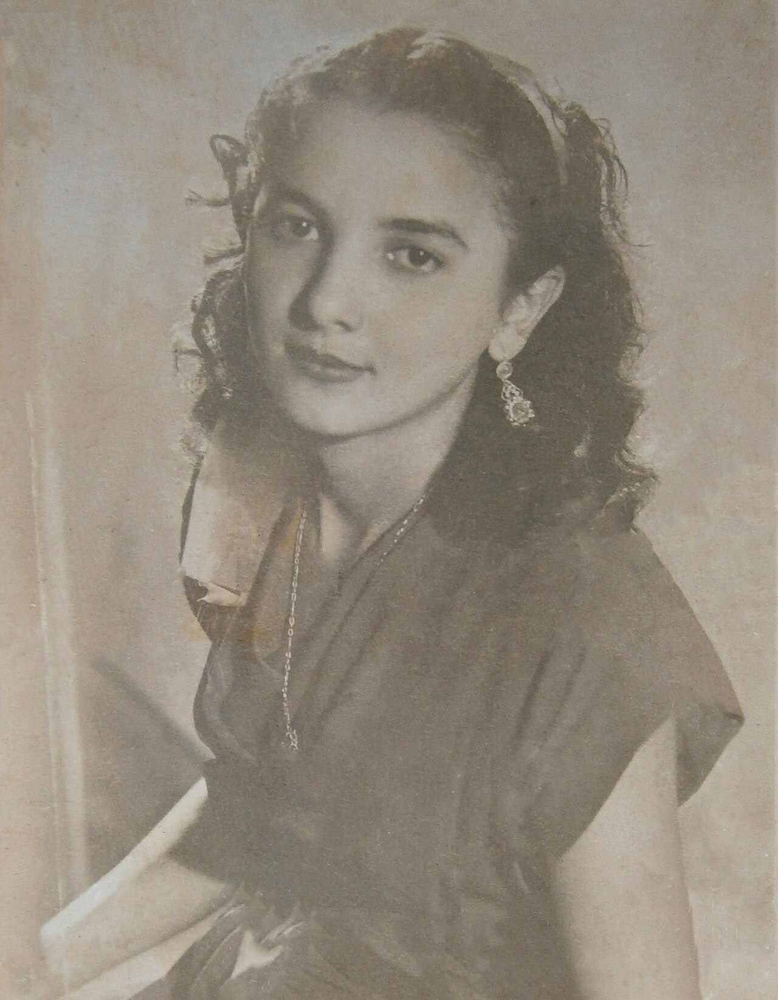
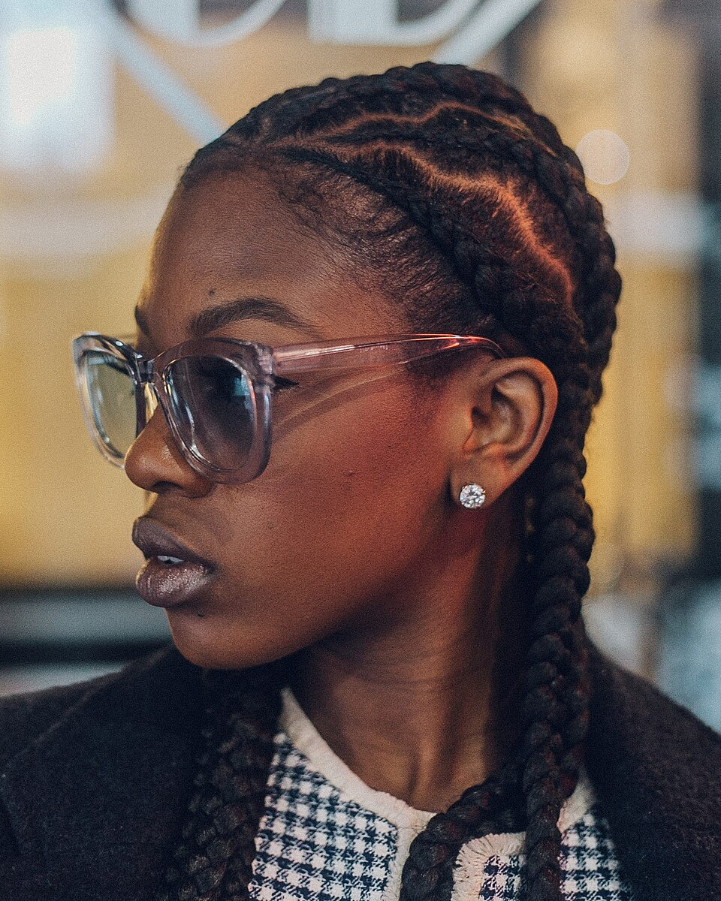
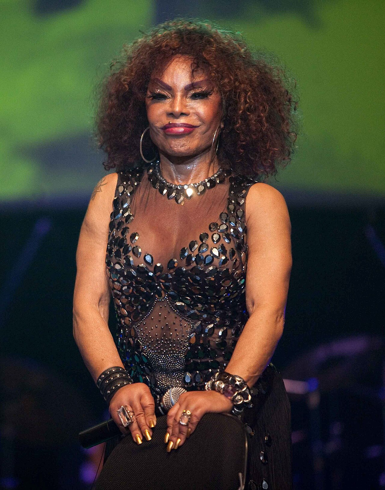

textura
Crespo
Padrão fechado do fio. Foi tratado por muito tempo como algo a esconder.
Anna Reg · CC BY-SA 3.0Cabelo, tons de pele, traços, padrões de beleza, autoestima, mídia e identidade.
Em várias sociedades africanas o cabelo era tratado como a parte mais alta do corpo. Ele ligava o mundo material ao espiritual. Penteados e metais mostravam estado civil, riqueza e linhagem.

Padrão fechado do fio. Foi tratado por muito tempo como algo a esconder.
Anna Reg · CC BY-SA 3.0Cachos abertos, com volume e definição. Ganhou força na transição capilar.
@photosbyphab · CC0
Ondas suaves. A textura muda de pessoa para pessoa, e nenhuma delas é a “certa”.
Justino Rodriguez · Venezuela, 1948 · CC0
Nagô, box e as de hoje. No passado, ajudaram a marcar rotas de fuga.
@photosbyphab · CC0
Deixar o crespo natural foi recusa da assimilação. Elza Soares atravessou décadas sem alisar.
Elza Soares, 2010 · CC BY 2.0Cada loc carrega história, tempo e memória.
Ramakazi · CC0Fotos do Wikimedia Commons, com autorização dos autores. Licenças completas na cena de créditos das fotos.
Alisar, trançar, usar dreads, pôr extensão ou deixar natural: tudo é escolha.
O problema começa quando alguém esconde o que é natural, porque aprendeu que o seu seria inferior.
Por isso não existe um jeito certo de usar o cabelo negro: a escolha é de cada um.
Essas diferenças são diversidade humana. O que precisa mudar é a hierarquia de beleza, não os traços.
A pele negra tem muitos tons, das mais claras até as mais escuras. Os tons se classificam como frios, quentes ou neutros, que é vocabulário de maquiagem e não de hierarquia.
A categoria do IBGE é autodeclaração: o dado registra o que a pessoa respondeu, e não uma medição de melanina. Censo 2022:
45% da população se declara parda. E não existe um tom só dentro de parda ou dentro de preta.
Quem se declara preta pode ter qualquer um dos tons da faixa. Não existe um tom único dentro da categoria.
A categoria tem a mesma amplitude de tons. Por isso as duas não são cores: são declarações.
O dado registra o que a pessoa declarou. Ele não mede melanina nem cor de pele.
Quando “preta” vira sinônimo de um tom específico, quem não tem esse tom é excluída da própria categoria.
Tratar alguém de forma diferente por causa da raça ou do grupo racial. Acontece em atitudes, instituições e estruturas.
Dentro de um mesmo grupo, tons de pele mais claros costumam ser mais valorizados. Não sai do grupo: sai do tom.
No Brasil o colorismo se liga à escravidão e à branquitude, e cruza classe e gênero. Um não substitui o outro: uma pessoa negra de tom claro sofre racismo e, ainda assim, pode sofrer colorismo.
Mais tons e mais silhuetas negras nas campanhas. Ainda em proporção menor do que na população.
Existem protagonistas negras. O papel mais valorizado ainda é o da pessoa de tom claro e traços finos.
Bases, corretivos e pós passaram a ter tons escuros. A paleta ainda não cobre a variação real da pele negra.
Quem mostra a rotina inteira, sem filtro, derruba a comparação com a vida editada.
Representatividade não acaba com o racismo. Mas muda o que a gente imagina possível.
Autoestima é como a pessoa se percebe e se valoriza. A aparência entra nessa conversa pela família, pela escola, pela mídia e pelos padrões da sociedade.
O primeiro espelho. As crenças sobre o que é bonito chegam cedo.
A turma é o primeiro grande grupo de comparação.
Mostra um modelo único de aparência como se fosse o normal.
Por muito tempo o padrão único foi a característica europeia.
Pesquisas com jovens negros em Belo Horizonte registram cabelos crespos associados à inferioridade.
O efeito não é só sobre como os outros olham. É sobre como a pessoa se olha.
Uma sociedade branca ensina quem é o belo.
Quem cresce sem se ver representado compara-se de um jeito diferente, e menos favorável a si mesmo.
Ver gente negra em destaque muda o que a gente acha possível. Não resolve tudo, mas abre espaço.
Não são naturais nem universais. São construídos pelas sociedades, sob influência da cultura, da mídia, da economia e das relações de poder. O que foi construído pode ser desfeito.
O cabelo liga o material ao espiritual. Penteados dizem linhagem.
A raspagem no porto destrói identidade. As tranças viram mapa de fuga.
Químicos como estratégia de sobrevivência. Crespo vira motivo de vergonha.
Black is Beautiful. Bloco Afro Ilê Aiyê e Black Rio na TV.
Voltar à textura natural. O cabelo como corpo político.
A mídia, a TV e a publicidade mostram um corpo “perfeito” que quase ninguém tem. Comparar a própria rotina com uma vida editada é injusto e acontece todo dia.
Um corpo editado, tratado como se fosse o normal.
Acontece todo dia. A distância vira sensação de falha pessoal.
Dieta, treino exaustivo e procedimento caro.
Em casos sérios, distúrbio alimentar e cirurgia desnecessária.
O passo 1 recomeça na tela seguinte. A origem está no passo 1, e o preço é pago no 3 e no 4.
Filtro, vida perfeita, comparação sem fim. A distância entre a tela e a vida real fica cada vez maior.
Quem mostra a realidade sem edição incentiva o amor-próprio e mostra que existe mais de um jeito de ser.
A plataforma não escolhe por você. Vida editada reforça o padrão e rotina real quebra.
Beleza não é só corpo e rosto. Também é inteligência, atitude e valores.
Julgar ou excluir alguém por não seguir o padrão de beleza da sociedade. O peso maior recai sobre quem está fora do padrão, e o dano é na autoestima, não só na imagem.
Comentários sobre a aparência acontecem em todos os lugares: escola, trabalho, mídia.
Não é um acontecimento isolado. É a mesma frase, de novo, em contextos diferentes.
O efeito se acumula. Ninguém aguenta ouvir a mesma coisa todos os dias.
Para a população negra isso se soma ao racismo e ao colorismo. O efeito real cai sobre a autoestima e o sentimento de pertencimento.
Uma sociedade não é feita de pessoas iguais. Ser diferente não deveria significar ter menos espaço. E a diversidade só vale quando existe respeito.
Conhecer os antepassados é conhecer de onde a família vem e como o país se formou.
Música, culinária, religião, literatura, arte e linguagem com marca africana.
Quem ensina a carregar o próprio nome, a própria origem e a própria língua.
O corpo também guarda origem. Reconhecer isso muda a autoimagem.
As práticas que se repetem e viram pertencimento.
O que a pessoa viveu, e não só o que herdou.
Valorizar as raízes não separa as pessoas: mostra que histórias diferentes formam a mesma sociedade.
10.639Lei · 2003
Tornou obrigatório o ensino de História e Cultura Afro-Brasileira e Africana nas escolas.
Antes o tema dependia da escola. A lei cria obrigação legal.
A história do país não pode ser contada apenas pela perspectiva europeia.
Ela faz parte de como a gente se enxerga e enxerga os outros.
Quando a escola ensina essa história, a turma inteira enxerga o país por outro ângulo.
Beleza não deveria ter uma única cor.
Todas as imagens vêm do Wikimedia Commons. Duas exigem crédito: crespo (CC BY-SA 3.0, de Anna Reg) e black power (CC BY 2.0, do Ministério da Cultura). As outras quatro são CC0 ou domínio público.